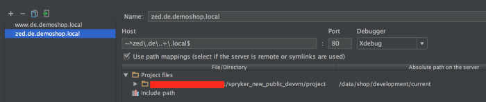
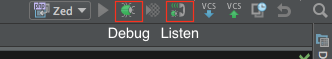

Debugging Setup
Used to be: http://spryker.github.io/getting-started/installation/debugging-setup/
This article describes how to setup debugging in your development environment.
To configure debugging for old version of the VM prior 91, click here.
Installing the Xdebug module
To install Xdebug run:
sudo -i apt-get install php7.1-xdebug
Enable Xdebug:
Make sure that Xdebug is enabled in your php.ini file.
In your virtual machine, navigate to /etc/php/7.0/mods-available/xdebug.ini and set:
xdebug.remote_enable=1
xdebug.remote_host=10.10.0.1
# This is needed to prevent max recursion exeception when Twig templates are very complicated
xdebug.max_nesting_level=1000
Enable module and restart PHP-FPM:
Run the following command from the command line:
sudo -i bash -c "phpenmod xdebug && systemctl restart php7.1-fpm.service"To disable:
sudo -i bash -c "phpdismod xdebug && systemctl restart php7.1-fpm.service"Define servers in PHPStorm:
In PHPStorm go to Settings (Preferences->Languages & Frameworks)->PHP->Servers Add a new Server using (+) with the following values:
- Name: Any name, e.g. zed.de.demoshop.local (it is used in CLI below)
- Host: ~^zed\.de\..+\.local$
- Check “Use path mappings”
- Set “Absolute path on server” to: /data/shop/development/current

For Yves, add another one using ~^www\.de\..+\.local$ as Host.
Host names changed
Starting from VM91 a regular expression is used to define host names and is forwarded to PHPStorm. This allows to support custom domains in your setup
Configure Debugger
In PHPStorm, go to: Settings (Preferences->Languages & Frameworks)->PHP->Debug -> Under External connections increase Max. simultaneous connections to 2.
This is necessary to allow debugging Zed through a connection from Yves.
Debugging
To debug from PHPStorm:
- Go to Run->Edit Configurations…
- Add a PHP Remote Debug using (+)
- Name: any name you like
- Servers: zed.de.demoshop.local
- Ide Key(session id): PHPSTORM

- Click on Listen for PHP Debug Connections button (in the picture)
- Click on Debug button (in the picture), you should get the message: “Waiting for incoming connection with IDE key ‘PHPSTORM’”
Debugging Console Commands:
In order to trigger Xdebug in CLI, prepend environment variables to commands like
XDEBUG_CONFIG="remote_host=10.10.0.1" PHP_IDE_CONFIG="serverName=zed.de.demoshop.local" vendor/bin/console <command>
The serverName variable should be equal to the server name used when defining servers in PHPStorm.
Xdebug Google Chrome helper (Optional):
As a Chrome user, you can install the “Xdebug helper” extension. Under options set the IDE Key to “PhpStorm”. Everybody else can thengenerate bookmarklets with IDE key set to “PhpStorm” (Debugger bookmarklets generator for PhpStorm).